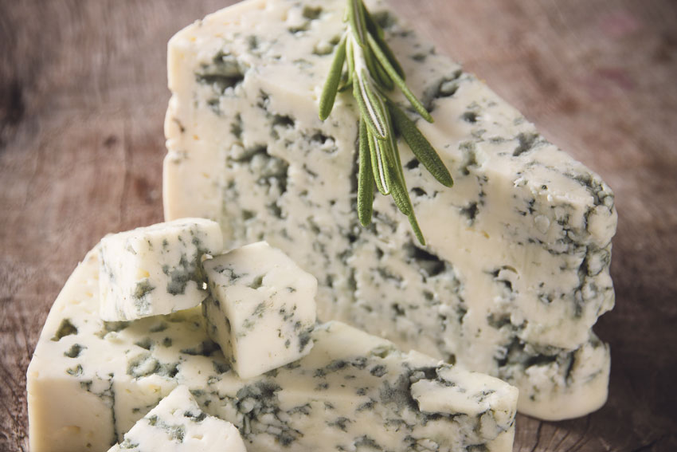
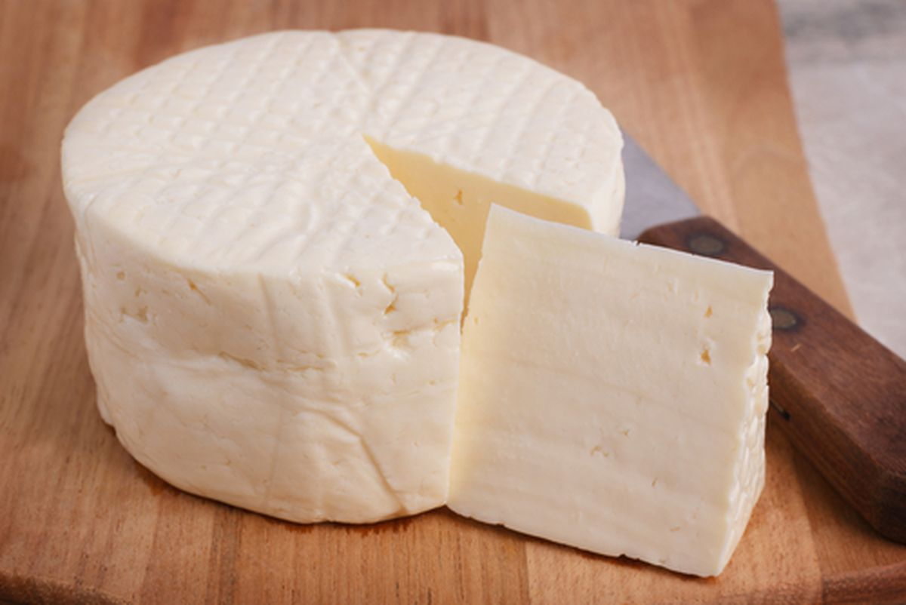
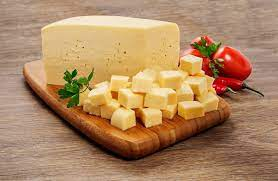

Existem milhares de tipos de queijos, porém, alguns critérios os diferenciam:
-tipo de leite utilizado (integral, padronizado ou desnatado)
-animal de origem (vaca, cabra, búfala, ovelha…)
-tempo de maturação
-quantidade de gordura presente
De acordo com a combinação dessas características, os queijos são caracterizados em diferentes tipos. E esses nomes são o que você busca nas prateleiras:
Gorgonzola 
Minas-frescal 
Muçarela 
...São muitos!